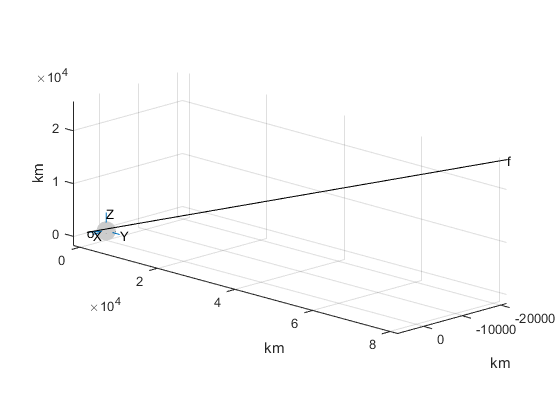

function orbit
clc; close all; clear all
hours = 3600;
G = 6.6742e-20;
m1 = 5.974e24*4903/398600;
R =1737 ;
m2 = 1000;
r0 = [6837.432552 1868.795099 1455.480629];
v0 = [-2.294079 6.758849 2.049468];
t0 = 0;
tf = 200*60;
mu = G*(m1 + m2);
y0 = [r0 v0]';
[t,y] = rkf45(@rates, [t0 tf], y0);
output
return
function dydt = rates(t,f)
x = f(1);
y = f(2);
z = f(3);
vx = f(4);
vy = f(5);
vz = f(6);
r = norm([x y z]);
ax = -mu*x/r^3;
ay = -mu*y/r^3;
az = -mu*z/r^3;
dydt = [vx vy vz ax ay az]';
end
function output
for i = 1:length(t)
r(i) = norm([y(i,1) y(i,2) y(i,3)]);
end
[rmax imax] = max(r);
[rmin imin] = min(r);
v_at_rmax = norm([y(imax,4) y(imax,5) y(imax,6)]);
v_at_rmin = norm([y(imin,4) y(imin,5) y(imin,6)]);
fprintf('\n\n--------------------------------------------------------\n')
fprintf('\n Earth Orbit\n')
fprintf(' %s\n', datestr(now))
fprintf('\n The initial position is [%g, %g, %g] (km).',...
r0(1), r0(2), r0(3))
fprintf('\n Magnitude = %g km\n', norm(r0))
fprintf('\n The initial velocity is [%g, %g, %g] (km/s).',...
v0(1), v0(2), v0(3))
fprintf('\n Magnitude = %g km/s\n', norm(v0))
fprintf('\n Initial time = %g h.\n Final time = %g h.\n',0,tf/hours)
fprintf('\n The minimum altitude is %g km at time = %g h.',...
rmin-R, t(imin)/hours)
fprintf('\n The speed at that point is %g km/s.\n', v_at_rmin)
fprintf('\n The maximum altitude is %g km at time = %g h.',...
rmax-R, t(imax)/hours)
fprintf('\n The speed at that point is %g km/s\n', v_at_rmax)
fprintf('\n--------------------------------------------------------\n\n')
[xx, yy, zz] = sphere(100);
surf(R*xx, R*yy, R*zz)
colormap(light_gray)
caxis([-R/100 R/100])
shading interp
line([0 2*R], [0 0], [0 0]); text(2*R, 0, 0, 'X')
line( [0 0], [0 2*R], [0 0]); text( 0, 2*R, 0, 'Y')
line( [0 0], [0 0], [0 2*R]); text( 0, 0, 2*R, 'Z')
hold on
plot3( y(:,1), y(:,2), y(:,3),'k')
line([0 r0(1)], [0 r0(2)], [0 r0(3)])
text( y(1,1), y(1,2), y(1,3), 'o')
text( y(end,1), y(end,2), y(end,3), 'f')
view([1,1,.4])
grid on
axis equal
xlabel('km')
ylabel('km')
zlabel('km')
function map = light_gray
r = 0.8; g = r; b = r;
map = [r g b
0 0 0
r g b];
end
end
end
--------------------------------------------------------
Earth Orbit
28-Jan-2017 23:56:27
The initial position is [6837.43, 1868.8, 1455.48] (km).
Magnitude = 7236.11 km
The initial velocity is [-2.29408, 6.75885, 2.04947] (km/s).
Magnitude = 7.42598 km/s
Initial time = 0 h.
Final time = 3.33333 h.
The minimum altitude is 5499.11 km at time = 0 h.
The speed at that point is 7.42598 km/s.
The maximum altitude is 86765 km at time = 3.33333 h.
The speed at that point is 7.3418 km/s
--------------------------------------------------------
